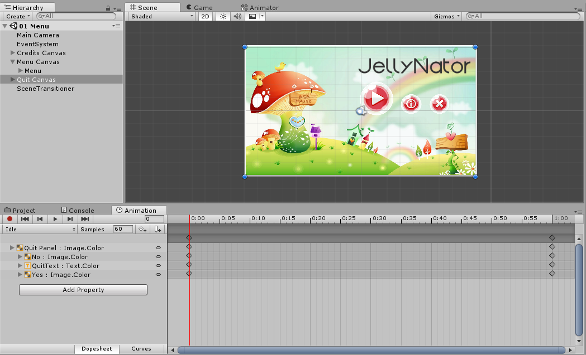
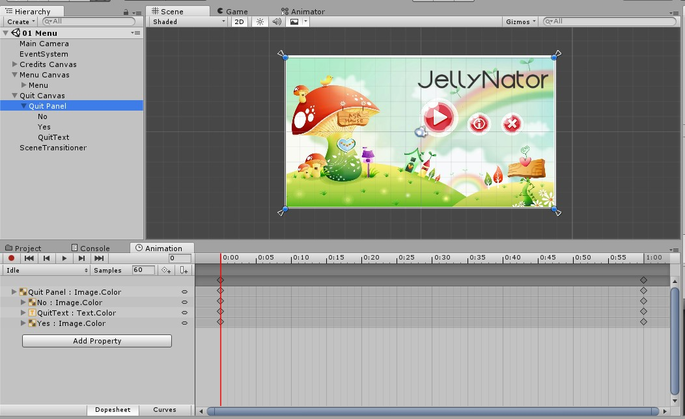

Um jogo não é constituído tão somente das mecânicas principais e assets bem elaborados, trata-se também da experiência do usuário, que envolve as cores, a disposição dos elementos de UI e também as animações utilizadas. Uma das mais suaves e elegantes é o efeito de fade-in/fade-out que pode ser criado diretamente no Unity. Exploremos, portanto, este último aspecto uma vez que o Unity já fornece uma maneira de criar e gerenciar animações: o Animator.
Através do atalho Ctrl+6, o Unity fornece acesso à janela Animation também conhecido como o lugar onde a mágica acontece. Pode-se animar a movimentação de personagens, de inimigos, mas também elementos de interface. Analisemos a imagem abaixo:

Há alguns canvases sobrepostos, cada qual com a finalidade de mostra alguma tela pertencente ao menu inciar. Logo abaixo, há a aba Animation correspondente ao Quit Canvas, que mostra a tela de confirmação de saída, caso o jogador assim o deseje. Perceba que cada elemento pertencente ao canvas em questão deve ser adicionado como um item para ser animado.

Olhemos então para o aspecto responsável por gerenciar as animações em si: o código. Os dois primeiros métodos garantem que haja a transição entre uma tela e outra até o final antes de a ordem do canvases mudarem (eles são sobrepostos, a fim de mostrar o desejado).
Esta é uma solução adequada e muito eficiente para quem está aprendendo, contudo, o problema é que esta abordagem, apesar de funcional, não é escalável, isto é, se quisermos adicionar ou remover elementos para a animação, cada um deve ser devidamente modificado na aba Animation. Eis a transição:
Então as principais dificuldades são: falta de escalabilidade e código verborrágico. Como, então, poderíamos deixar estas transições tão interessantes quanto estão, no entanto, mais facilmente adaptáveis. É muito simples, na verdade, basta utilizar a propriedade Canvas Group, do próprio Canvas.
Observe que a primeira propriedade é justamente o Alpha, responsável pelo efeito de fade-in/fade-out! Observemos o código:
Consideravelmente mais compreensível, aqui simplesmente há um método responsável por modificar o valor do Alpha do canvas em 1s (isto pode ser adaptado para qualquer outro tempo por meio de variável). Os outros métodos simplesmente fazem a transição ao desativar um canvas e outro, sem a necessidade de gerenciar a ordem onde cada qual aparece no layer. A outra vantagem e talvez a maior de todas é que não há envolvimento com o Animator, logo todos os objetos filhos do canvas sofrem automaticamente os efeitos do pai. Abaixo a animação otimizada aplicada em outro contexto de jogo:
Descubra um pouco mais nas fontes abaixo: